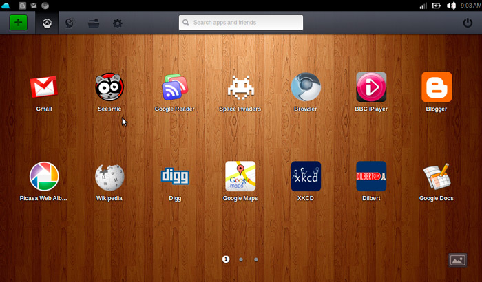

Облачные операционные системы. ТОП-6 лучших Cloud PC
Знакомство с облачными технологиями у пользователей чаще всего связано с известными файлохранилищами – Dropbox, SkyDrive, Google Drive, Box. Но когда необходимо расширить границы присутствия в «облаке» стоит прибегнуть к использованию облачных операционных систем (Cloud PC).
Cloud PC
Такие системы открываются в любом браузере независимо от используемого устройства (смартфона, планшета, настольного компьютера) и выполняют множество функций – работа с операциями, документами, просмотром видео и аудио, резервное копирование и т.д. Мы расскажем о самых популярных «облачных» ОС, на которых стоит обратить внимание.
1. Zero PC (http://zeropc.com/)
Одна из самых функциональных облачных операционных систем в сети Интернет. Сервис работает как в браузере, так имеет готовые приложения для iPhone, iPad, Android и Amazon Appstore. Кроме того, сервис поддерживает авторизацию через социальные сети Facebook, Google +, Twitter.
После регистрации в Zero PC пользователь получает готовый рабочий стол с окнами, ярлыками, папками и кнопкой «Apps» по аналогии с «Пуск» у Windows.
Интерфейс разработан на HTML5 и Java без использования Adobe Flash. При нажатии на правую клавишу срабатывает традиционное контекстное меню, которое выполняет все основные функции операционной системы – копирование, вставка, перемещение, удаление, архивация. Имеется встроенный текстовый редактор Thinkfree Office 4, интернет-браузер, аудио- и видеопроигрыватель.
Для хранения файлов можно использовать облачное хранилище Google Drive или встроенное собственное. В бесплатной версии предоставляется 1 Гбайт свободного места, при переходе на тариф Basic (2,99 $ в месяц) – 5 Гб, а на тариф Pro (9,99 $ в месяц) – целых 50 Гб.
Из минусов можно отметить отсутствие полной локализации на русский язык.
2. CloudMe и CloudTop (http://cloudme.com)
CloudMe – новое название сервиса iCloud, который размещался на домене iCloud до весны 2011 года, пока компания Apple не приобрела права на этот домен у шведской студии Xcerion для собственного облачного сервиса и синхронизации устройств.
Сейчас CloudMe и CloudTop – мощная облачная операционная система со стильным дизайном, работающая на все популярных устройствах – Windows, Mac OS, Linux, iPhone, iPad, Android, BlackBerry.
Сервис также построен на языке HTML5 и включает в себя рабочий стол, ярлыки, виджеты, панели управления и кнопку «Пуск». В системе предусмотрены стандартные приложения (почта, календарь, фотоальбом) и дополнительные (около 50), которые устанавливаются через менеджер приложений. Единственным минусом является отсутствие встроенного текстового редактора.
CloudMe предоставляет на выбор несколько тарифных планов:
1) Бесплатный (3 Гб свободного пространства);
2) 25 Гб (4,90 € в месяц);
3) 100 Гб (14,90 € в месяц);
4) 500 Гб (49,90 € в месяц).
Интерфейс полностью локализован на русский язык.
3. Glide OS (http://glidesociety.com)
Облачная оперативная система полностью построенная на Adobe Flash. Сервис не имеет отдельных приложений на смартфонах, однако располагает отдельной мобильной версией на HTML с урезанным функционалом.
Ресурс предлагает три режима отображения: рабочий стол (десктоп), Glide HD и Интернет-портал. В режиме рабочего стола доступно 15 приложений: текстовый редактор, фоторедактор, календарь, видео- и аудиоплеер, почтовый клиент, различные утилиты.
Glide HD предлагает унифицировать работу с файлами – загружать, удалять, редактировать и распределять по папкам. Сервис имеет приложение Glide One, позволяющее синхронизировать файлы на компьютере и в «облаке».
Сервис подойдет тем пользователям, которым необходимо большое количество свободного места. В бесплатной редакции предоставляется 30 Гб дискового пространства, а за 4,95$ в месяц можно увеличить до 250 Гб.
4. AstraNOS (http://astranos.org)
AstraNOS создана по подобию операционной системы Mac OS, что несомненно понравится поклонникам «яблочной» продукции.
Сервис написан на языке программирования HTML и JavaScript. Интерфейс имеет ленточную панель с иконками приложений. А их насчитывается большое количество: браузер, текстовый редактор, почтовый клиент, RSS-ридер, игры, калькулятор, календарь, стикеры и просмоторщик фотографий.
Из минусов можно выделить отсутствие облачного хранилища и взаимодействия с настольным компьютером или мобильным устройством. Основным преимуществом AstraNOS является его бесплатность – проект полностью некоммерческий.

5. Joli OS (http://jolicloud.com)
Операционная система Joli OS представлена в двух вариантах – настольная ОС и веб-версия. Разработка французского стартапа началась еще в 2010 году, когда Google начала внедрять собственную операционную систему Chrome OS.
Joli OS основана на ядре Linux и может запускаться даже на устаревших компьютерах. Интерфейс построен на современных технологиях HTML5, что обеспечивает высокую скорость работы. Кроме декстопной версии существует онлайн-сервис Joli Cloud, необходимый для синхронизации файлов между устройствами. Кроме обычной регистрации, авторизацию можно осуществить через социальную сеть Facebook. Внутри облачного сервиса предлагается на выбор автоматическое подключение популярных Интернет-служб – Box, Dropbox, Google Drive, SkyDrive, Instagram, Vimeo, Youtube, SoundCloud, Flickr и др.
Пользователь может централизованно просматривать документы, фотографии, видео и музыку из авторизованных социальных сервисов. Однако на этом все активные действия заканчиваются. Редактировать или изменять файлы нельзя.
6. Silve OS (http://silveos.com)
Все поклонникам ОС Microsoft Windows придется по душе облачная Silve OS. Сервис разработан на технологии Silverlight и требует установки дополнительных плагинов в браузерах.
Система включает в себя самые необходимые приложения: браузер, проводник, медиапроигрыватель, блокнот, графический редактор, калькуляторы, онлайн-карты Bing Maps и небольшое количество игр.
Сервис содержит множество ограничений – не предусмотрено контекстное меню, нельзя перетаскивать файлы кликом мыши, нет обратного сохранения файлов с персонального компьютера в облако.
Стоит отметить, что у сервиса существует мобильное приложение для Windows Phone, позволяющее владельцам устройств на базе этой ОС использовать облачную «десктопную» Silve OS на смартфоне.
{kind=link}